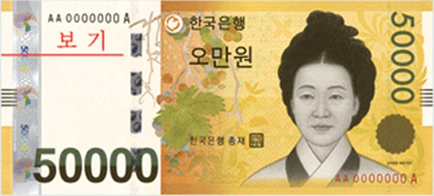

환율 13.6원 급등·국고채 금리 상승… 기업·가계 대출에 먹구름
미국의 금리 인상 직후 원·달러 환율이 하루 13.6원 뛰고 국고채 금리도 함께 올랐다. 조달 비용 상승이 기업과 가계의 대출 부담으로 이어질 것이라는 전망이 나온다.
여년재 기자 · 2026.09.25
橋경제·문화·스포츠

미국 연방준비제도의 금리 인상 발표 직후 원·달러 환율이 하루 만에 13.6원 올랐다. 같은 날 국고채 금리도 상승세를 보였다.
광고 문의 · 300×250환율 상승의 경로는 단순하다. 미국 금리가 오르면 달러 자산의 기대 수익이 높아지고, 자금이 달러로 이동하면서 원화 가치가 내려간다.
국고채 금리는 시장이 앞으로의 정책 금리를 어떻게 보느냐를 반영한다. 한국은행이 11월에 추가 인상에 나설 수 있다는 전망이 퍼지면서 장·단기 금리가 함께 움직였다.
기업 쪽에서는 회사채 발행 비용이 올라간다. 신용등급이 낮은 기업일수록 가산금리가 더 크게 붙어, 자금 조달 여건의 격차가 벌어진다.
가계 쪽에서는 변동금리 주택담보대출이 먼저 반응한다. 대출 금리의 기준이 되는 지표가 오르면 몇 달 시차를 두고 매달 상환액이 늘어난다.
수입 물가도 함께 움직인다. 원유와 곡물, 원자재를 달러로 사 오는 구조여서 환율 상승은 국내 물가를 밀어 올리는 요인이 된다.
재한 화인 가정에는 송금과 학비가 직접적인 항목이다. 본국 송금액을 원화로 환산할 때, 그리고 달러로 학비를 낼 때 부담의 방향이 갈린다.
당국은 시장 상황을 주시하겠다는 입장이다. 급격한 쏠림이 나타날 경우 안정 조치를 취할 수 있다는 기존 기조를 유지하고 있다.